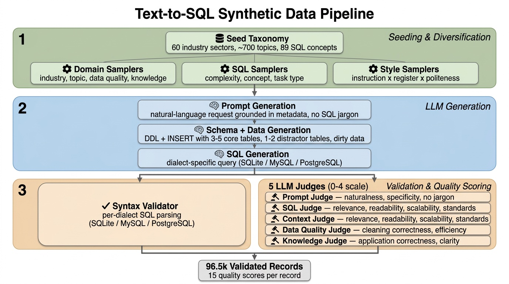
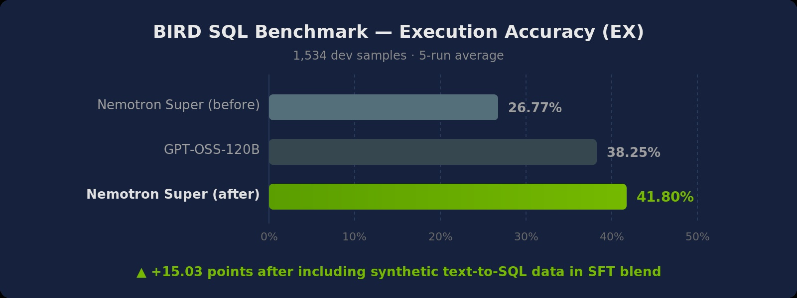

Engineering an Enterprise-Grade Text-to-SQL Dataset with NeMo Data Designer
While LLMs have mastered generic coding, Text-to-SQL remains one of the most challenging frontiers in enterprise AI. In many ways this is due to (i) SQL tasks relying on both code and data and (ii) real-world data and databases being quite messy. Focusing on careful data design that accounts for real-world diversity and complexity, we built a NeMo Data Designer pipeline that includes conditional sampling, three-stage LLM generation, code validators, and multi-dimensional judge scoring to generate reasoning-heavy text-to-SQL samples across PostgreSQL, MySQL, and SQLite, and automatically filter down to the highest quality 96.5k records. Each sample pairs a natural-language prompt and a fully synthetic database schema context with a target SQL query. To improve robustness and mimic the messiness of production databases, the pipeline injects distractor tables and columns into the schema context, forcing the model to learn to ignore irrelevant schema elements. The final dataset is validated and filtered through per-dialect syntax validators and five LLM-as-a-critic judges.

The "Real-World" Gap: Why Academic Data Wasn't Enough
The gap between academic benchmarks and the messy reality of enterprise data warehouses is massive. On academic benchmarks like Spider (where schemas are clean, tables are few, and queries are straightforward), frontier models score above 85%. On BIRD (which introduces dirty data, larger schemas, and external knowledge requirements), the best open models reach roughly 70% execution accuracy --- and on Spider 2.0 Lite (which uses real enterprise databases with hundreds of tables, multiple dialects, and complex business logic), even the best models score below 50%.
The problem isn't model capability --- it's training data. Most open-source text-to-SQL datasets assume a "happy path": intuitive column names, perfect data types, and straightforward questions. Production SQL is different:
- Dialect specificity. Generic "SQL" doesn't compile. We needed valid, executable code for MySQL, PostgreSQL, and SQLite that respects their unique syntax ---
date('now')in SQLite vs.CURRENT_DATEin Postgres,DISTINCT ONin PostgreSQL vs. nested subqueries in MySQL. - Dirty data. Real columns contain currency symbols (
$57,500), mixed date formats, and JSON blobs. The model needs to learn defensive SQL: writing queries that useCAST,STR_TO_DATE, and string manipulation functions to clean data at query time before attempting any aggregation. We explicitly prompted the generation engine to introduce anti-patterns like storing dates as text ('01-Jan-2023'), including currency symbols in pricing columns, or burying critical flags inside JSON blobs. - Distractor tables and schema linking. In production, you rarely get just the 2 tables you need; you're more likely to get a schema with 50 tables, many of which look identical. We injected semantically similar "distractor" tables into every context ---
sales_ordersvs.sales_orders_archive,customer_leadsvs.active_customers--- forcing the model to perform schema linking based on column constraints and relationships, not just table names. - Industry-specific schemas. Healthcare EHR tables look nothing like financial trading systems. The column names, relationships, and business logic are domain-specific.
- Complexity gradients. Junior analysts write simple SELECTs; senior engineers write recursive CTEs with window functions. Training data needs the full spectrum.
Domain diversity and complexity coverage matter more than dataset size.
Pipeline Overview
The pipeline generates text-to-SQL training data through a five-stage process. Each record flows through seeding & diversification, three LLM generation steps, and a validation + quality scoring layer. All three LLM generation stages use a reasoning model whose internal chain-of-thought improves schema design and SQL correctness. The pipeline runs independently for each SQL dialect, with dialect-specific prompts, validators, and judge prompts.
ASCII version of the pipeline diagram
TEXT-TO-SQL SDG PIPELINE
========================
┌─────────────────────────────────────────────────────────────────────────────────────┐
│ STAGE 1: SEEDING & DIVERSIFICATION │
│ │
│ Domain Controls SQL Controls Prompt Controls │
│ ├─ industry_sector (60) ├─ sql_complexity (3 tiers) ├─ instruction_style │
│ ├─ topic (~700) ├─ sql_concept (89 buckets) │ (5 styles) │
│ ├─ data_quality_challenge ├─ sql_task_type (12 cats) ├─ linguistic_register│
│ │ (5 categories) └─ sql_task_concept (94) │ (5 registers) │
│ └─ knowledge_dependency └─ politeness_level │
│ (3 categories) (4 levels) │
└─────────────────────────────────────────┬───────────────────────────────────────────┘
│
▼
┌─────────────────────────────────────────────────────────────────────────────────────┐
│ STAGE 2: PROMPT GENERATION (Reasoning LLM) │
│ │
│ Generates a natural-language request to a data assistant. │
│ Grounded in sampled metadata; no SQL jargon; realistic thresholds. │
│ Style adapts to instruction_style × linguistic_register × politeness_level. │
└─────────────────────────────────────────┬───────────────────────────────────────────┘
│
▼
┌─────────────────────────────────────────────────────────────────────────────────────┐
│ STAGE 3: SCHEMA + DATA GENERATION (Reasoning LLM) │
│ │
│ Generates dialect-specific DDL (CREATE TABLE) + sample data (INSERT). │
│ ├─ 3–5 core tables with PKs, FKs, and realistic constraints │
│ ├─ 1–2 distractor tables (plausible but unnecessary, with FK links) │
│ ├─ 3–5 distractor columns per table (created_at, updated_by, etc.) │
│ └─ Dirty data injected per data_quality_concept (mixed formats, embedded chars) │
└─────────────────────────────────────────┬───────────────────────────────────────────┘
│
▼
┌─────────────────────────────────────────────────────────────────────────────────────┐
│ STAGE 4: SQL GENERATION (Reasoning LLM) │
│ │
│ Generates dialect-specific SQL (SQLite / MySQL / PostgreSQL). │
│ ├─ References only tables/columns from the schema context │
│ ├─ Handles dirty data with cleaning logic (CAST, REPLACE, SUBSTR, regex) │
│ ├─ Ignores distractor tables and columns │
│ └─ Anchors relative time to max date in data (no CURRENT_DATE / NOW()) │
└─────────────────────────────────────────┬───────────────────────────────────────────┘
│
▼
┌─────────────────────────────────────────────────────────────────────────────────────┐
│ STAGE 5: VALIDATION + QUALITY SCORING │
│ │
│ Syntax Validator 5 LLM Judges (0–4 scores) │
│ ├─ SQL_SQLITE ├─ Prompt: naturalness, specificity, no SQL jargon │
│ ├─ SQL_MYSQL ├─ SQL: relevance, readability, scalability, standards │
│ └─ SQL_POSTGRES ├─ Context: relevance, readability, scalability, stds │
│ ├─ Data Quality: cleaning correctness, efficiency │
│ └─ Knowledge: application correctness, clarity │
│ │
│ 96.5k records pass validation and quality filtering │
└─────────────────────────────────────────────────────────────────────────────────────┘
Step 1: Seeding & Diversification -- Controlling Diversity at the Source
Rather than relying on LLM creativity alone for diversity, the pipeline samples structured metadata that deterministically controls every axis of variation. A JSON taxonomy file defines the problem space:
| Axis | Categories | Subcategories | Role |
|---|---|---|---|
| Industry sector | 60 | ~700 topics | Domain grounding (Healthcare, FinServ, Gaming, ...) |
| SQL complexity | 3 tiers | 89 concepts | Difficulty level (Beginner → Advanced) |
| SQL task type | 12 categories | 94 concepts | What the query does (analytics, transformation, ...) |
| Data quality | 5 challenges | 12 concepts | Dirty data to inject and clean |
| Knowledge dependency | 3 categories | 9 concepts | Implicit reasoning required |
| Instruction style | 5 styles | -- | imperative, declarative, interrogative, contextual, abbreviated |
| Linguistic register | 5 registers | -- | formal, conversational, technical, academic, direct |
| Politeness level | 4 levels | -- | none, minimal, polite, very polite |
Standard categorical samplers draw independently from their value lists. Data Designer's SubcategorySamplerParams creates hierarchical dependencies --- what we call "Semantic Blueprints" --- that ensure internally consistent records. When industry_sector samples "Healthcare", topic is drawn only from healthcare-specific subcategories. When sql_complexity samples "Beginner", sql_concept is restricted to foundational SQL operations. This is the difference between realistic training data and random noise.
Code snippets in this post are illustrative
The code blocks below show the key configuration patterns for each pipeline stage. Model aliases (prompt_gen, context_gen, etc.) and companion files (prompts.py, rubrics.py) are referenced but not fully defined inline. For a complete, runnable pipeline, see the Enterprise Text-to-SQL Recipe.
import data_designer.config as dd
config = dd.DataDesignerConfigBuilder()
# Industry → Topic (two-level conditional)
config.add_column(dd.SamplerColumnConfig(
name="industry_sector",
sampler_type=dd.SamplerType.CATEGORY,
params=dd.CategorySamplerParams(values=[
"Healthcare", "Finance", "Technology", "Retail", "Manufacturing",
"Aerospace", "Energy", "Telecommunications", "Transportation", "Education",
# ... 60 industries total
]),
))
config.add_column(dd.SamplerColumnConfig(
name="topic",
sampler_type=dd.SamplerType.SUBCATEGORY,
params=dd.SubcategorySamplerParams(
category="industry_sector",
values={
"Healthcare": ["Electronic Health Records", "Telemedicine Platforms",
"Clinical Trials", "Patient Scheduling", "Insurance Claims"],
"Finance": ["Fraud Detection", "Trading Systems", "Risk Assessment",
"Portfolio Management", "Regulatory Compliance"],
"Technology": ["Cloud Platforms", "ML Pipelines", "DevOps Tools",
"API Gateway Logs", "User Analytics"],
"Retail": ["Inventory Management", "Customer Segmentation",
"Pricing Optimization", "Supply Chain", "Returns Processing"],
# ... 700 subcategories across all industries
},
),
))
# Complexity → SQL Concept (two-level conditional)
config.add_column(dd.SamplerColumnConfig(
name="sql_complexity",
sampler_type=dd.SamplerType.CATEGORY,
params=dd.CategorySamplerParams(values=["Beginner", "Intermediate", "Advanced"]),
))
config.add_column(dd.SamplerColumnConfig(
name="sql_concept",
sampler_type=dd.SamplerType.SUBCATEGORY,
params=dd.SubcategorySamplerParams(
category="sql_complexity",
values={
"Beginner": ["Basic SELECT Statements", "WHERE Clauses", "Simple Aggregations", ...],
"Intermediate": ["Window Functions", "CASE Expressions", "Correlated Subqueries", ...],
"Advanced": ["Recursive CTEs", "Frame Clauses", "Pivot/Unpivot", ...],
},
),
))
# Dialect control (one value per run; the pipeline runs once per dialect)
config.add_column(dd.SamplerColumnConfig(
name="sql_dialect",
sampler_type=dd.SamplerType.CATEGORY,
params=dd.CategorySamplerParams(values=["SQLite"]), # or "MySQL", "PostgreSQL"
))
# Task type restricted by complexity via conditional_params
task_types = {
"Foundational Queries & DML": [...],
"Data Quality & Validation": [...],
"Advanced Analytics & Windowing": [...],
"Schema, DDL & Performance": [...],
# ... 12 task types total
}
task_type_conditional_params = {
"sql_complexity == 'Beginner'": dd.CategorySamplerParams(
values=["Foundational Queries & DML", "Data Quality & Validation", ...]
),
"sql_complexity == 'Advanced'": dd.CategorySamplerParams(
values=["Advanced Analytics & Windowing", "Schema, DDL & Performance", ...]
),
}
config.add_column(dd.SamplerColumnConfig(
name="sql_task_type",
sampler_type=dd.SamplerType.CATEGORY,
params=dd.CategorySamplerParams(values=list(task_types.keys())),
conditional_params=task_type_conditional_params,
))
Prompt diversity is controlled independently through three additional samplers (instruction style, linguistic register, politeness level). Because these are combinatorial (5 × 5 × 4 = 100 style combinations), even records with identical domain and SQL metadata will produce stylistically distinct prompts. A CFO asking "Can you pull the Q3 numbers?" and an engineer saying "Write a query that joins sales on customer_id" should both produce correct SQL.
Step 2: Generating Natural-Language Prompts
The prompt generation step produces a single natural-language request to a data assistant. The LLM receives all sampled metadata via Jinja2 template variables and must produce a request that:
- Describes a business problem, not a SQL specification (no SQL jargon allowed)
- Matches the sampled instruction style, linguistic register, and politeness level
- Implicitly requires the sampled SQL concept, task type, data quality handling, and knowledge dependency
- Uses realistic thresholds appropriate for small sample data (5-10 rows per table)
config.add_column(dd.LLMTextColumnConfig(
name="sql_prompt",
model_alias="prompt_gen",
system_prompt=(
"You write natural-language requests to a data assistant. "
"You adapt your writing style based on the specified instruction style, "
"linguistic register, and politeness level."
),
prompt=(
"Write a single-sentence, natural-language request to a data assistant.\n\n"
"## Style Requirements\n"
"* Instruction Style: {{ instruction_style }}\n"
"* Linguistic Register: {{ linguistic_register }}\n"
"* Politeness Level: {{ politeness_level }}\n\n"
"## Grounding Requirements\n"
"* Industry: {{ industry_sector }} / {{ topic }}\n"
"* SQL Complexity: {{ sql_complexity }} ({{ sql_concept }})\n"
"* Task: {{ sql_task_type }} ({{ sql_task_concept }})\n"
"* Data Quality: {{ data_quality_challenge }} ({{ data_quality_concept }})\n"
"* Knowledge: {{ knowledge_dependency }} ({{ knowledge_concept }})\n"
),
))
Here are example prompts generated from the same underlying SQL concept (window functions) but with different style settings:
| Style | Example Prompt |
|---|---|
| imperative / formal / none | List each sales representative alongside their quarterly revenue and the running total across the team, ordered by performance. |
| interrogative / conversational / polite | Hey, could you show me how each rep's quarterly numbers stack up against the team's running total? |
| abbreviated / direct / none | Sales rep quarterly revenue, running team total, ranked by performance |
| contextual / academic / polite | For the upcoming performance review, could you provide each representative's quarterly revenue figures alongside a cumulative team total? |
Step 3: Schema and Data Generation with Distractor Injection
This is the most distinctive stage of the pipeline. For each record, the LLM generates a complete database schema (DDL) and sample data (INSERT statements) in the target SQL dialect. The schema must include both the tables needed to answer the prompt and deliberate noise:
- 3–5 core tables directly related to the industry/topic, connected via foreign keys
- 1–2 distractor tables that are plausible for the domain but not needed to answer the prompt, each with FK relationships to core tables and 5-10 rows of realistic data
- 3–5 distractor columns per table (e.g.,
created_at,updated_by,description,is_active) that are realistic but irrelevant to the query - Dirty data injected according to the sampled
data_quality_concept-- stored in TEXT/VARCHAR columns so the schema itself doesn't enforce type correctness
In production, you rarely get just the 2 tables you need; you're more likely to get a schema with 50 tables, many of which look identical. Injecting semantically similar "distractor" tables --- sales_orders vs. sales_orders_archive, customer_leads vs. active_customers --- forces the model to perform schema linking based on column constraints and relationships, not just table names. This is the skill gap between academic benchmarks and production.
The schema prompt requires four clearly labeled sections (-- Core Tables, -- Distractor Tables, -- Sample Data for Core Tables, -- Sample Data for Distractor Tables) and enforces determinism by forbidding real-time functions like NOW() or CURRENT_DATE in INSERT statements.
config.add_column(dd.LLMCodeColumnConfig(
name="sql_context",
model_alias="context_gen",
system_prompt="You are an expert SQL database architect who designs well-structured, normalized schemas.",
prompt=(
"Generate {{ sql_dialect }} DDL and sample data for tables relevant to the instruction.\n"
"Instruction: {{ sql_prompt }}\n\n"
"Requirements:\n"
"* Include 3–5 core tables for {{ industry_sector }}/{{ topic }}\n"
"* Include 1–2 distractor tables (plausible but NOT needed for the instruction)\n"
"* Include 3–5 distractor columns per table\n"
"* Introduce {{ data_quality_concept }} dirty data issues\n"
"* Use section headers: -- Core Tables, -- Distractor Tables, etc.\n"
"* No NOW()/CURRENT_DATE in INSERT statements\n"
),
code_lang=dd.CodeLang.SQL_SQLITE, # or SQL_MYSQL, SQL_POSTGRES
))
Step 4: Dialect-Specific SQL Generation
The SQL generation step receives the natural-language prompt and the generated schema context, then produces an executable query in the target dialect. The prompt enforces several constraints that are critical for training quality:
- Only reference defined tables/columns -- the LLM is strictly forbidden from inventing schema elements
- Handle dirty data -- the query must clean data issues (CAST, REPLACE, SUBSTR, regex) before computing results
- Ignore distractors -- no unnecessary joins or column selections; distractor elements must be left untouched
- Anchor relative time -- instead of
CURRENT_DATE, anchor to(SELECT MAX(date_col) FROM table)for reproducibility - Dialect-specific syntax -- SQLite uses
strftime, MySQL usesDATE_SUB, PostgreSQL uses::casting andinterval. Each dialect also has prompt-level constraints to ensure portability (e.g., SQLite prompts excludeLATERALjoins andREGEXP_REPLACE; MySQL prompts excludeREGEXP_REPLACEfor pre-8.0 compatibility andCONVERT_TZto avoid unpopulated timezone table issues)
config.add_column(dd.LLMCodeColumnConfig(
name="sql",
model_alias="sql_gen",
system_prompt="You are an expert SQL programmer. Return only the final SQL.",
prompt=(
"Write {{ sql_dialect }} SQL for the instruction using only the provided database context.\n"
"Instruction: {{ sql_prompt }}\n\n"
"Database Context:\n{{ sql_context }}\n\n"
"* Handle {{ data_quality_concept }} issues with cleaning logic\n"
"* Apply {{ knowledge_concept }}\n"
"* Match {{ sql_complexity }} level using {{ sql_concept }}\n"
"* Do NOT join distractor tables or select distractor columns\n"
),
code_lang=dd.CodeLang.SQL_SQLITE, # or SQL_MYSQL, SQL_POSTGRES
))
The pipeline runs independently for each dialect (SQLite, MySQL, PostgreSQL), producing ~32k records per dialect that are combined into the final 96.5k-record dataset. Separating prompt, schema, and query generation across three stages is essential --- when you ask a single prompt to generate all three, the SQL tends to reference tables that don't exist in the schema, or the schema doesn't contain the columns the SQL needs.
The chain-of-thought traces from the reasoning model teach it to think like a Data Engineer: decomposing complex problems, handling edge cases, and verifying logic before writing a single line of code. A typical reasoning trace looks like:
"The user wants to filter by date, but the 'timestamp' column is stored as TEXT. I need to first normalize this column using STR_TO_DATE before I can apply the WHERE clause..."
Step 5: The Quality Waterfall
Generating 300,000 samples is straightforward. Ensuring they are correct is the hard part. We implemented a rigorous "Quality Waterfall" that rejected over 68% of the generated data.
Hard Validation
Data Designer's built-in code validator checks each SQL query for syntactic correctness against the target dialect:
config.add_column(dd.ValidationColumnConfig(
name="sql_validity_result",
target_columns=["sql"],
validator_type=dd.ValidatorType.CODE,
validator_params=dd.CodeValidatorParams(code_lang=dd.CodeLang.SQL_SQLITE),
))
The validator returns is_valid (boolean) and error_messages (string). Records that fail parsing are flagged immediately. Supported dialects: SQL_SQLITE, SQL_POSTGRES, SQL_MYSQL, SQL_TSQL, SQL_BIGQUERY, SQL_ANSI.
Five LLM Judges
Beyond syntax validity, we evaluate record quality across five judges, each scoring on a 0-4 scale:
| Judge | What It Evaluates | Scoring Criteria |
|---|---|---|
| Prompt Judge | Natural-language prompt quality | Naturalness of wording, specificity and clarity, absence of SQL jargon |
| SQL Judge | Generated SQL quality | Relevance (penalizes unnecessary joins to distractor tables), readability, scalability, standards compliance |
| Context Judge | Schema + sample data quality | Relevance (penalizes missing distractors and bare-minimum schemas), readability, scalability, standards compliance |
| Data Quality Judge | Cleaning logic in SQL | Correctness of cleaning logic, efficiency of cleaning method |
| Knowledge Judge | Implicit knowledge application | Correctness of knowledge application, clarity of inference |
The SQL judge rubric explicitly penalizes distractor usage:
"The SQL should only JOIN or reference tables that are strictly necessary to answer the prompt. The database context may include distractor tables that look relevant but are not needed -- penalize queries that unnecessarily join or reference these tables."
Each judge provides a score and reasoning for each dimension, making it easy to diagnose why a record scored low. After configuring the five LLMJudgeColumnConfig columns (see the full recipe for complete judge definitions), expression columns extract numeric scores into flat columns for downstream filtering:
config.add_column(dd.ExpressionColumnConfig(
name="sql_relevance_score",
expr="{{ sql_judge_result.relevance.score if sql_judge_result.relevance.score is not none else '' }}",
))
Rich Metadata for Precision Training
We didn't just generate text pairs --- we generated structured data. Unlike standard datasets that give you a black box of question → SQL, every single record is tagged with rich, granular metadata:
| Field | Description | Example Values |
|---|---|---|
industry_sector |
Domain vertical | Healthcare, Finance, Aerospace |
topic |
Specific subdomain | Electronic Health Records, Fraud Detection |
sql_complexity |
Difficulty tier | Beginner, Intermediate, Advanced |
sql_concept |
Target SQL skill | Window Functions, Recursive CTEs |
sql_dialect |
Target database | PostgreSQL, MySQL, SQLite |
instruction_style |
Prompt style | imperative, interrogative, contextual |
linguistic_register |
Language register | formal, conversational, technical |
politeness_level |
Politeness level | none, minimal, polite, very polite |
data_quality_challenge |
Dirty data type | Type Mismatches, Temporal Drift |
knowledge_dependency |
Reasoning required | Domain Knowledge, Implicit Logic |
| 15 judge scores | Per-dimension scores | 0-4 across 5 judges |
This allows researchers and engineers to "slice and dice" the training data with surgical precision. If you want to fine-tune a model specifically for Finance analytics using Window Functions in PostgreSQL, you can filter for exactly that subset.
Results
| Metric | Value |
|---|---|
| Records generated | 300,000 |
| Records after Quality Waterfall | 96,500 |
| Rejection rate | 68% |
| SQL dialects | PostgreSQL, MySQL, SQLite |
| Industry coverage | 60 distinct industries |
| Topic coverage | ~700 distinct subcategories |
| SQL concept coverage | 89 concepts across 3 complexity tiers |
| Syntax validation | 100% verified |
| LLM judges | 5 judges, 15 scoring dimensions |
| Minimum judge score | ≥ 3/4 across all dimensions |
The high rejection rate is a feature, not a bug. By generating 3x more data than we needed and filtering aggressively, we ensured every record in the final dataset is both syntactically valid and semantically meaningful.
BIRD Benchmark Results
This dataset was shipped in the SFT stage of Nemotron Super v3. On the BIRD SQL benchmark (1,534 dev samples, 5-run average), Nemotron Super achieves 41.80% EX (execution accuracy) --- outperforming GPT-OSS-120B at 38.25%. Including our synthetic dataset in the SFT blend raised Nemotron Super's EX on BIRD by 15 points, from 26.77% to 41.80%.

| Model | BIRD EX (%) |
|---|---|
| Nemotron Super (before synthetic text-to-SQL SFT data) | 26.77 |
| GPT-OSS-120B | 38.25 |
| Nemotron Super (after synthetic text-to-SQL SFT data) | 41.80 |
Caveat on BIRD: BIRD measures execution accuracy (EX) --- whether the query returns the correct result set when run against the ground-truth database. This is stricter than exact-match or string similarity, but it can also be inflated by semantically different queries that happen to produce identical result sets on small test data. BIRD's dev set includes dirty data, external knowledge requirements, and multi-table schemas, making it more representative of production SQL than earlier benchmarks like Spider --- but it does not cover all production challenges (e.g., multi-statement transactions, DDL, stored procedures, or the hundreds-of-tables schemas common in enterprise warehouses). Results here are on the 1,534-sample dev split averaged over 5 runs.
Key Takeaways
-
Conditional sampling prevents incoherent records.
SubcategorySamplerParamsensures "Geospatial SQL" only appears with "Advanced" complexity, and "Electronic Health Records" only appears with "Healthcare". Independent samplers would produce nonsensical combinations that confuse training. -
Three-stage generation beats one-shot. Separating prompt, schema, and query generation ensures the SQL actually references the tables that exist. One-shot generation frequently hallucinates tables.
-
Dirty data must be intentional. Explicitly prompting for anti-patterns (dates as text, currency symbols, JSON blobs) forces the model to learn defensive SQL. Clean schemas produce clean-only training data.
-
Distractor tables teach schema linking. Injecting semantically similar but irrelevant tables forces the model to read the schema instead of guessing from table names. This is the skill gap between academic benchmarks and production.
-
Per-dialect generation avoids lowest-common-denominator SQL. Rather than generating ANSI SQL and hoping it works everywhere, the pipeline produces dialect-specific schemas and queries with appropriate syntax (
strftimevsDATE_SUBvsinterval). Each dialect gets its own tailored prompts, validators, and judge prompts. -
Hard validators are non-negotiable for code. LLM judges can assess quality, but they can't reliably detect syntax errors. Syntax validators catch parsing failures that the judge misses.
-
Multi-dimension scoring enables targeted filtering. A query that scores 4 on Relevance but 1 on Efficiency tells you the model understood the task but wrote a bad plan. You can filter differently depending on what you're training for.
-
Chain-of-thought teaches reasoning, not just syntax. Including reasoning traces in the training data teaches models to decompose problems, handle edge cases, and verify logic --- acting as a Data Engineer rather than a translator.
Next Steps
- Code Sandbox for semantic correctness. The current Quality Waterfall validates syntax and assesses quality (LLM judges), but it doesn't verify whether the query actually returns the right results. A natural next step would be adding Code Sandbox support to Data Designer --- executing generated SQL against a ground-truth database and comparing results to enable execution-based filtering, end-to-end verification, and hard negative mining for preference training.
- RL on BIRD. Run reinforcement learning experiments using the NeMo Gym RL environment for BIRD, training models to improve execution accuracy through reward signals from actual query execution.
- Schema representation. Improve how schemas are represented in prompts to close the gap with SOTA approaches that use richer structural encodings (e.g., foreign key graphs, column descriptions, value examples).
- More benchmarks. Incorporate additional SQL benchmarks --- Spider 2.0, LiveSQLBench --- to evaluate generalization beyond BIRD and drive the next iteration of the pipeline.
Try It Yourself
The snippet below builds a simplified text-to-SQL pipeline for SQLite using Data Designer. It covers the core stages -- seeding & diversification, prompt generation, schema generation with distractors, SQL generation, syntax validation, and LLM judge scoring.
Minimal example: text-to-SQL pipeline for SQLite
import data_designer.config as dd
from data_designer.interface import DataDesigner
MODEL_ALIAS = "nvidia-text"
# Build the pipeline (uses default NVIDIA provider via NVIDIA_API_KEY)
data_designer = DataDesigner()
config = dd.DataDesignerConfigBuilder()
# --- Stage 1: Seeding & diversification ---
config.add_column(dd.SamplerColumnConfig(
name="industry_sector", sampler_type=dd.SamplerType.CATEGORY,
params=dd.CategorySamplerParams(values=["Healthcare", "Financial Services", "Retail"]),
))
config.add_column(dd.SamplerColumnConfig(
name="sql_complexity", sampler_type=dd.SamplerType.CATEGORY,
params=dd.CategorySamplerParams(values=["Beginner", "Intermediate", "Advanced"]),
))
config.add_column(dd.SamplerColumnConfig(
name="instruction_style", sampler_type=dd.SamplerType.CATEGORY,
params=dd.CategorySamplerParams(
values=["imperative", "declarative", "interrogative", "contextual", "abbreviated"]
),
))
# --- Stage 2: Natural-language prompt ---
config.add_column(dd.LLMTextColumnConfig(
name="sql_prompt", model_alias=MODEL_ALIAS,
prompt=(
"Write a natural-language request to a data assistant about {{ industry_sector }}.\n"
"Style: {{ instruction_style }}. Complexity: {{ sql_complexity }}.\n"
"Describe the business problem without SQL jargon."
),
))
# --- Stage 3: Schema + data with distractors ---
config.add_column(dd.LLMCodeColumnConfig(
name="sql_context", model_alias=MODEL_ALIAS,
prompt=(
"Generate SQLite DDL and sample data for: {{ sql_prompt }}\n"
"Include 3-5 core tables, 1-2 distractor tables, distractor columns per table.\n"
"Use section headers: -- Core Tables, -- Distractor Tables, etc."
),
code_lang=dd.CodeLang.SQL_SQLITE,
))
# --- Stage 4: SQL generation ---
config.add_column(dd.LLMCodeColumnConfig(
name="sql", model_alias=MODEL_ALIAS,
prompt=(
"Write SQLite SQL for: {{ sql_prompt }}\n"
"Database Context:\n{{ sql_context }}\n"
"Ignore distractor tables/columns. Handle dirty data."
),
code_lang=dd.CodeLang.SQL_SQLITE,
))
# --- Stage 5: Validation + judge ---
config.add_column(dd.ValidationColumnConfig(
name="sql_validity",
target_columns=["sql"],
validator_type=dd.ValidatorType.CODE,
validator_params=dd.CodeValidatorParams(code_lang=dd.CodeLang.SQL_SQLITE),
))
config.add_column(dd.LLMJudgeColumnConfig(
name="sql_judge", model_alias=MODEL_ALIAS,
prompt=(
"Grade the SQL quality.\n"
"Prompt: {{ sql_prompt }}\nContext: {{ sql_context }}\nSQL: {{ sql }}\n"
"Penalize unnecessary joins to distractor tables."
),
scores=[
dd.Score(name="relevance", description="Uses only necessary tables/columns",
options={"4": "Perfect", "3": "Minor extras", "2": "Unnecessary joins", "1": "Largely irrelevant", "0": "Wrong"}),
dd.Score(name="readability", description="Code clarity and formatting",
options={"4": "Excellent", "3": "Good", "2": "Adequate", "1": "Poor", "0": "Unreadable"}),
],
))
# Generate
preview = data_designer.preview(config, num_records=10)
preview.display_sample_record()
Full recipe: enterprise_text_to_sql.py (self-contained, runnable)
# SPDX-FileCopyrightText: Copyright (c) 2025 NVIDIA CORPORATION & AFFILIATES. All rights reserved.
# SPDX-License-Identifier: Apache-2.0
# /// script
# requires-python = ">=3.10"
# dependencies = [
# "data-designer",
# ]
# ///
"""Nemotron Super Text-to-SQL Recipe: Distractors, Dirty Data, and Multi-Judge Scoring
Generate enterprise-grade text-to-SQL training data with dialect-specific SQL
(SQLite, MySQL, PostgreSQL), distractor table/column injection, dirty data
handling, conditional sampling, and multi-dimensional LLM judge scoring.
This recipe implements the pipeline used to produce 96.5k validated text-to-SQL
records for Nemotron Super v3 SFT training, which raised BIRD benchmark
execution accuracy from 26.77% to 41.80%.
Pipeline architecture:
┌─────────────────────────────────────────────────────────────────────────┐
│ STAGE 1: SEEDING & DIVERSIFICATION │
│ │
│ Domain Controls SQL Controls Prompt Controls │
│ ├─ industry_sector ├─ sql_complexity ├─ instruction_style │
│ ├─ topic (conditional) ├─ sql_concept ├─ linguistic_register │
│ ├─ data_quality_challenge├─ sql_task_type └─ politeness_level │
│ ├─ data_quality_concept │ (conditional) │
│ ├─ knowledge_dependency └─ sql_task_concept │
│ └─ knowledge_concept │
├─────────────────────────────────────────────────────────────────────────┤
│ STAGE 2: PROMPT GENERATION (LLM) │
│ Natural-language request grounded in metadata; no SQL jargon. │
│ Style adapts to instruction_style × register × politeness. │
├─────────────────────────────────────────────────────────────────────────┤
│ STAGE 3: SCHEMA + DATA GENERATION (LLM) │
│ Dialect-specific DDL + INSERT with 3-5 core tables, 1-2 distractor │
│ tables, 3-5 distractor columns per table, dirty data injection. │
├─────────────────────────────────────────────────────────────────────────┤
│ STAGE 4: SQL GENERATION (LLM) │
│ Dialect-specific SQL; ignores distractors; handles dirty data. │
├─────────────────────────────────────────────────────────────────────────┤
│ STAGE 5: VALIDATION + QUALITY SCORING │
│ │
│ Syntax Validator 5 LLM Judges (0-4 scores) │
│ ├─ SQL_SQLITE ├─ Prompt: naturalness, specificity, │
│ ├─ SQL_MYSQL │ absence of SQL jargon │
│ └─ SQL_POSTGRES ├─ SQL: relevance, readability, │
│ │ scalability, standards │
│ ├─ Context: relevance, readability, │
│ │ scalability, standards │
│ ├─ Data Quality: cleaning correctness, │
│ │ efficiency │
│ └─ Knowledge: application correctness, │
│ clarity of inference │
│ │
│ 15 score columns extracted for downstream filtering │
└─────────────────────────────────────────────────────────────────────────┘
Prerequisites:
- OPENAI_API_KEY environment variable for OpenAI provider model aliases (default model alias is "openai-text").
- NVIDIA_API_KEY environment variable for NVIDIA provider model aliases.
Run:
# Basic usage (generates 5 records by default, SQLite dialect)
uv run enterprise_text_to_sql.py
# Generate for a specific dialect
uv run enterprise_text_to_sql.py --dialect postgres
# For help message and available options
uv run enterprise_text_to_sql.py --help
"""
from pathlib import Path
import data_designer.config as dd
from data_designer.interface import DataDesigner, DatasetCreationResults
SQL_DIALECTS = {
"sqlite": dd.CodeLang.SQL_SQLITE,
"mysql": dd.CodeLang.SQL_MYSQL,
"postgres": dd.CodeLang.SQL_POSTGRES,
}
def build_config(model_alias: str, dialect: str = "sqlite") -> dd.DataDesignerConfigBuilder:
code_lang = SQL_DIALECTS[dialect]
config_builder = dd.DataDesignerConfigBuilder()
# =========================================================================
# Stage 1: Seeding & diversification
# =========================================================================
config_builder.add_column(
dd.SamplerColumnConfig(
name="sql_dialect",
sampler_type=dd.SamplerType.CATEGORY,
params=dd.CategorySamplerParams(values=[dialect]),
)
)
config_builder.add_column(
dd.SamplerColumnConfig(
name="industry_sector",
sampler_type=dd.SamplerType.CATEGORY,
params=dd.CategorySamplerParams(
values=[
"Healthcare",
"Financial Services",
"Retail",
"Technology",
"Manufacturing",
"Aerospace",
"Energy",
"Telecommunications",
"Transportation",
"Education",
],
),
)
)
config_builder.add_column(
dd.SamplerColumnConfig(
name="topic",
sampler_type=dd.SamplerType.SUBCATEGORY,
params=dd.SubcategorySamplerParams(
category="industry_sector",
values={
"Healthcare": [
"Electronic Health Records",
"Telemedicine Platforms",
"Clinical Trials",
"Patient Scheduling",
"Insurance Claims",
],
"Financial Services": [
"Fraud Detection",
"Trading Systems",
"Risk Assessment",
"Portfolio Management",
"Regulatory Compliance",
],
"Retail": [
"Inventory Management",
"Customer Segmentation",
"Pricing Optimization",
"Supply Chain",
"Returns Processing",
],
"Technology": [
"Cloud Platforms",
"ML Pipelines",
"DevOps Tools",
"API Gateway Logs",
"User Analytics",
],
"Manufacturing": [
"Quality Control",
"Production Scheduling",
"Equipment Maintenance",
"Supply Chain Optimization",
"Safety Compliance",
],
"Aerospace": [
"Flight Operations",
"Satellite Systems",
"Parts Procurement",
"Maintenance Scheduling",
"Crew Management",
],
"Energy": [
"Grid Management",
"Renewable Forecasting",
"Asset Monitoring",
"Trading and Markets",
"Regulatory Reporting",
],
"Telecommunications": [
"Network Operations",
"Customer Billing",
"Service Provisioning",
"Call Detail Records",
"Churn Prediction",
],
"Transportation": [
"Fleet Management",
"Route Optimization",
"Freight Tracking",
"Driver Scheduling",
"Maintenance Records",
],
"Education": [
"Student Records",
"Course Enrollment",
"Learning Analytics",
"Financial Aid",
"Faculty Management",
],
},
),
)
)
config_builder.add_column(
dd.SamplerColumnConfig(
name="sql_complexity",
sampler_type=dd.SamplerType.CATEGORY,
params=dd.CategorySamplerParams(
values=["Beginner", "Intermediate", "Advanced"],
),
)
)
config_builder.add_column(
dd.SamplerColumnConfig(
name="sql_concept",
sampler_type=dd.SamplerType.SUBCATEGORY,
params=dd.SubcategorySamplerParams(
category="sql_complexity",
values={
"Beginner": [
"Basic SELECT Statements",
"WHERE Clauses",
"Simple Aggregations",
"Basic JOINs",
"INSERT, UPDATE, DELETE",
"ORDER BY and LIMIT",
],
"Intermediate": [
"Window Functions",
"Correlated Subqueries",
"Multiple JOINs with Aggregations",
"CASE Expressions",
"GROUP BY with HAVING",
"Set Operations (UNION, INTERSECT, EXCEPT)",
],
"Advanced": [
"Recursive CTEs",
"Frame Clauses",
"Pivot/Unpivot Patterns",
"Complex Analytical Functions",
"Self-Joins for Hierarchies",
"Conditional Aggregation",
],
},
),
)
)
config_builder.add_column(
dd.SamplerColumnConfig(
name="sql_task_type",
sampler_type=dd.SamplerType.CATEGORY,
params=dd.CategorySamplerParams(
values=[
"Foundational Queries & DML",
"Data Quality & Validation",
"Advanced Analytics & Windowing",
"Schema, DDL & Performance",
],
),
conditional_params={
"sql_complexity == 'Beginner'": dd.CategorySamplerParams(
values=["Foundational Queries & DML", "Data Quality & Validation"],
),
"sql_complexity == 'Intermediate'": dd.CategorySamplerParams(
values=[
"Foundational Queries & DML",
"Data Quality & Validation",
"Advanced Analytics & Windowing",
],
),
"sql_complexity == 'Advanced'": dd.CategorySamplerParams(
values=[
"Advanced Analytics & Windowing",
"Schema, DDL & Performance",
"Data Quality & Validation",
],
),
},
)
)
config_builder.add_column(
dd.SamplerColumnConfig(
name="sql_task_concept",
sampler_type=dd.SamplerType.SUBCATEGORY,
params=dd.SubcategorySamplerParams(
category="sql_task_type",
values={
"Foundational Queries & DML": [
"Multi-table retrieval",
"Filtered aggregation",
"Conditional insert/update",
"Ranked retrieval",
],
"Data Quality & Validation": [
"NULL detection and handling",
"Duplicate detection",
"Data type casting and cleanup",
"Referential integrity check",
],
"Advanced Analytics & Windowing": [
"Running totals and moving averages",
"Ranking and percentile computation",
"Gap and island detection",
"Year-over-year comparison",
],
"Schema, DDL & Performance": [
"Index-aware query optimization",
"Partitioned query design",
"Constraint-based validation",
"Schema migration pattern",
],
},
),
)
)
config_builder.add_column(
dd.SamplerColumnConfig(
name="data_quality_challenge",
sampler_type=dd.SamplerType.CATEGORY,
params=dd.CategorySamplerParams(
values=[
"Type Mismatches",
"Temporal Drift",
"Embedded Special Characters",
"Mixed Formats",
"NULL Handling",
],
),
)
)
config_builder.add_column(
dd.SamplerColumnConfig(
name="data_quality_concept",
sampler_type=dd.SamplerType.SUBCATEGORY,
params=dd.SubcategorySamplerParams(
category="data_quality_challenge",
values={
"Type Mismatches": [
"Currency stored as text with symbols ($57,500)",
"Boolean stored as string (yes/no/true/false/1/0)",
],
"Temporal Drift": [
"Dates stored as text in mixed formats (01-Jan-2023 vs 2023/01/01)",
"Timestamps with inconsistent timezone handling",
],
"Embedded Special Characters": [
"Newlines or tabs inside text fields",
"Unicode or accented characters in names",
],
"Mixed Formats": [
"Phone numbers in mixed formats (555-1234 vs (555) 123-4567)",
"Addresses with inconsistent abbreviations",
],
"NULL Handling": [
"NULLs disguised as empty strings or sentinel values (-1, N/A)",
"Optional FKs with NULL references",
],
},
),
)
)
config_builder.add_column(
dd.SamplerColumnConfig(
name="knowledge_dependency",
sampler_type=dd.SamplerType.CATEGORY,
params=dd.CategorySamplerParams(
values=["Domain Knowledge", "Implicit Logic", "Common Sense"],
),
)
)
config_builder.add_column(
dd.SamplerColumnConfig(
name="knowledge_concept",
sampler_type=dd.SamplerType.SUBCATEGORY,
params=dd.SubcategorySamplerParams(
category="knowledge_dependency",
values={
"Domain Knowledge": [
"Industry-specific business rules",
"Regulatory thresholds and compliance criteria",
"Domain-specific KPI definitions",
],
"Implicit Logic": [
"Fiscal year vs calendar year reasoning",
"Business-day exclusion logic",
"Implied sort/filter criteria from context",
],
"Common Sense": [
"Unit conversion (e.g., cents to dollars)",
"Age or duration calculation from dates",
"Geographic or hierarchical inference",
],
},
),
)
)
config_builder.add_column(
dd.SamplerColumnConfig(
name="instruction_style",
sampler_type=dd.SamplerType.CATEGORY,
params=dd.CategorySamplerParams(
values=["imperative", "declarative", "interrogative", "contextual", "abbreviated"],
),
)
)
config_builder.add_column(
dd.SamplerColumnConfig(
name="linguistic_register",
sampler_type=dd.SamplerType.CATEGORY,
params=dd.CategorySamplerParams(
values=["formal", "conversational", "technical", "academic", "direct"],
),
)
)
config_builder.add_column(
dd.SamplerColumnConfig(
name="politeness_level",
sampler_type=dd.SamplerType.CATEGORY,
params=dd.CategorySamplerParams(
values=["none", "minimal", "polite", "very polite"],
),
)
)
# =========================================================================
# Stage 2: Prompt generation
# =========================================================================
config_builder.add_column(
dd.LLMTextColumnConfig(
name="sql_prompt",
model_alias=model_alias,
system_prompt=PROMPT_GEN_SYSTEM_PROMPT,
prompt=PROMPT_GEN_TEXT,
)
)
# =========================================================================
# Stage 3: Schema + data with distractor injection
# =========================================================================
config_builder.add_column(
dd.LLMCodeColumnConfig(
name="sql_context",
model_alias=model_alias,
system_prompt="You are an expert SQL database architect who designs well-structured, normalized schemas.",
prompt=SCHEMA_GEN_PROMPTS[dialect],
code_lang=code_lang,
)
)
# =========================================================================
# Stage 4: Dialect-specific SQL generation
# =========================================================================
config_builder.add_column(
dd.LLMCodeColumnConfig(
name="sql",
model_alias=model_alias,
system_prompt="You are an expert SQL programmer who solves problems with clean, efficient, and perfectly structured queries. Return only the final SQL.",
prompt=SQL_GEN_PROMPTS[dialect],
code_lang=code_lang,
)
)
# =========================================================================
# Stage 5: Validation + 5 LLM judges
# =========================================================================
config_builder.add_column(
dd.ValidationColumnConfig(
name="sql_validity_result",
target_columns=["sql"],
validator_type=dd.ValidatorType.CODE,
validator_params=dd.CodeValidatorParams(code_lang=code_lang),
)
)
config_builder.add_column(
dd.LLMJudgeColumnConfig(
name="sql_prompt_judge_result",
model_alias=model_alias,
prompt=PROMPT_JUDGE_TEXT,
scores=PROMPT_SCORES,
)
)
config_builder.add_column(
dd.LLMJudgeColumnConfig(
name="sql_judge_result",
model_alias=model_alias,
prompt=SQL_JUDGE_TEXT,
scores=SQL_SCORES,
)
)
config_builder.add_column(
dd.LLMJudgeColumnConfig(
name="sql_context_judge_result",
model_alias=model_alias,
prompt=CONTEXT_JUDGE_PROMPTS[dialect],
scores=SQL_SCORES,
)
)
config_builder.add_column(
dd.LLMJudgeColumnConfig(
name="sql_data_quality_judge_result",
model_alias=model_alias,
prompt=DATA_QUALITY_JUDGE_TEXT,
scores=DATA_QUALITY_SCORES,
)
)
config_builder.add_column(
dd.LLMJudgeColumnConfig(
name="sql_knowledge_judge_result",
model_alias=model_alias,
prompt=KNOWLEDGE_JUDGE_TEXT,
scores=KNOWLEDGE_SCORES,
)
)
# =========================================================================
# Score extraction (15 flat columns for downstream filtering)
# =========================================================================
for judge_name, rubric_names in SCORE_EXTRACTION_MAP:
prefix = judge_name.replace("_judge_result", "").replace("sql_", "")
for rubric in rubric_names:
config_builder.add_column(
dd.ExpressionColumnConfig(
name=f"{prefix}_{rubric}_score",
expr=f"{{{{ {judge_name}.{rubric}.score if {judge_name}.{rubric}.score is not none else '' }}}}",
)
)
return config_builder
def create_dataset(
config_builder: dd.DataDesignerConfigBuilder,
num_records: int,
artifact_path: Path | str | None = None,
) -> DatasetCreationResults:
data_designer = DataDesigner(artifact_path=artifact_path)
results = data_designer.create(config_builder, num_records=num_records)
return results
# =============================================================================
# Prompt Templates
# =============================================================================
PROMPT_GEN_SYSTEM_PROMPT = """\
You write natural-language requests to a data assistant. You adapt your writing \
style based on the specified instruction style, linguistic register, and politeness level. \
Requests avoid meta-instructions, code, or explicit SQL jargon unless it's common-sense terminology.\
"""
PROMPT_GEN_TEXT = """\
Write a single-sentence, natural-language request to a data assistant or agent to solve a specific SQL problem.
## Style Requirements
* **Instruction Style:** Use a {{ instruction_style }} style.
* **Linguistic Register:** Use a {{ linguistic_register }} register.
* **Politeness Level:** Apply {{ politeness_level }} politeness.
## Content Constraints
* Do NOT use explicit SQL keywords or technical jargon. Describe the **business problem**.
* Keep the intent specific; mention outputs, filters, and aggregations clearly.
* Do not include code, backticks, or any fenced blocks.
* Realistic Thresholds: The sample data is small (5-10 rows per table). Keep thresholds small.
* Relative Time: It's okay to say "recent", "last year", "past few months" instead of exact dates.
## Grounding Requirements
* The request must pertain to the {{ industry_sector }} sector and {{ topic }} topic.
* The request must implicitly require SQL at the {{ sql_complexity }} level involving {{ sql_concept }}.
* The request must require a {{ sql_task_type }} task, specifically "{{ sql_task_concept }}".
* The problem must implicitly require handling "{{ data_quality_concept }}".
* The problem must implicitly require "{{ knowledge_concept }}".\
"""
_SCHEMA_GEN_TEMPLATE = """\
Generate {dialect_label} DDL and sample data for tables relevant to the instruction.
Instruction: {{{{ sql_prompt }}}}
Requirements:
* Scope: Provide only CREATE TABLE and INSERT statements.
* Integrity: Define PRIMARY KEYs and FOREIGN KEYs with consistent data types. Use snake_case names.
* **Section Headers (REQUIRED):**
- `-- Core Tables`
- `-- Distractor Tables`
- `-- Sample Data for Core Tables`
- `-- Sample Data for Distractor Tables`
- Do NOT include any other comments.
* Coverage: Include 3-5 core tables for {{{{ industry_sector }}}}/{{{{ topic }}}} connected via FKs.
* **Distractor Tables:** Include 1-2 additional tables plausible for the domain but NOT needed \
for the instruction. Each with FK links to core tables and 5-10 rows of realistic data.
* Realism: Include 3-5 distractor columns per table (created_at, updated_by, description, is_active).
* **Dirty Data:** Introduce "{{{{ data_quality_concept }}}}" issues. Dirty columns MUST be {text_type}.
* Sample Data: 5-10 realistic rows per table. Mix clean and dirty rows.
* **No Data Comments:** Do NOT explain which rows are dirty.
* **Determinism:** No NOW()/CURRENT_DATE in INSERT statements. Use explicit literal dates.
* Executability: End each statement with a semicolon. Use {dialect_label} syntax.
* Do not include meta-instructions or reasoning traces.\
"""
SCHEMA_GEN_PROMPTS = {
"sqlite": _SCHEMA_GEN_TEMPLATE.format(dialect_label="SQLite", text_type="TEXT"),
"mysql": _SCHEMA_GEN_TEMPLATE.format(dialect_label="MySQL", text_type="VARCHAR or TEXT"),
"postgres": _SCHEMA_GEN_TEMPLATE.format(dialect_label="PostgreSQL", text_type="TEXT or VARCHAR"),
}
_SQL_GEN_BASE = """\
Write {dialect_label} SQL for the instruction using only the provided database context.
Instruction: {{{{ sql_prompt }}}}
Database Context:
{{{{ sql_context }}}}
Requirements:
* Validity: You are strictly forbidden from referencing any table or column not in the context.
* Handle Data Quality: Correctly handle "{{{{ data_quality_concept }}}}" using appropriate cleaning functions.
* Apply Knowledge: Apply "{{{{ knowledge_concept }}}}" even if it requires inferring unstated logic.
* Grounding: The SQL must demonstrate {{{{ sql_concept }}}} and {{{{ sql_task_type }}}}.
* Precision: Avoid SELECT *. Explicitly list columns; alias computed columns descriptively.
* Alignment: Match the {{{{ sql_complexity }}}} level.
* **Relative Time Anchoring:** Do NOT use CURRENT_DATE or real-time functions. Anchor to max date in data.
* **No Unasked Joins:** Do NOT join distractor tables or select distractor columns.
* **Logic:** Prefer CTEs to clean/normalize first, then compute/aggregate.
* Comments: Do not include inline comments.
* Formatting: Terminate with semicolons.\
"""
_SQLITE_EXTRAS = """
* Use SQLite syntax: strftime for dates, LIMIT instead of TOP.
* Do NOT use LATERAL joins or REGEXP_REPLACE. Use REPLACE()/SUBSTR() for cleaning.
* Date Parsing: Normalize with REPLACE(date_col, '/', '-') inside date()/strftime().\
"""
_MYSQL_EXTRAS = """
* Use MySQL syntax: DATE_ADD, DATEDIFF for dates, LIMIT for pagination, backticks for identifiers.
* Do NOT use REGEXP_REPLACE or CONVERT_TZ. Use REPLACE(), TRIM(), SUBSTRING().\
"""
_POSTGRES_EXTRAS = """
* Use PostgreSQL syntax: :: for casting, ILIKE for case-insensitive matching, LIMIT and OFFSET.
* regexp_replace is available for cleaning.\
"""
SQL_GEN_PROMPTS = {
"sqlite": _SQL_GEN_BASE.format(dialect_label="SQLite") + _SQLITE_EXTRAS,
"mysql": _SQL_GEN_BASE.format(dialect_label="MySQL") + _MYSQL_EXTRAS,
"postgres": _SQL_GEN_BASE.format(dialect_label="PostgreSQL") + _POSTGRES_EXTRAS,
}
# =============================================================================
# Judge Prompts
# =============================================================================
PROMPT_JUDGE_TEXT = """\
You are an expert product analyst who writes and reviews natural, human-like data requests.
Evaluate the **NL Prompt** quality.
## NL Prompt
{{ sql_prompt }}\
"""
SQL_JUDGE_TEXT = """\
You are a SQL data expert. Grade the quality of **Generated SQL** based on the prompt and context.
Natural Language Prompt:
{{ sql_prompt }}
Database Context:
{{ sql_context }}
Generated SQL:
{{ sql }}
When scoring, pay special attention to:
- **Minimal Table Usage:** Penalize queries that unnecessarily join distractor tables.
- **Minimal Column Usage:** Distractor columns should be ignored unless explicitly needed.
- **Correctness:** The query must produce the correct result.
- **Efficiency:** Prefer simple, readable solutions over unnecessarily complex ones.\
"""
_CONTEXT_JUDGE_TEMPLATE = """\
You are a SQL database architect. Evaluate the **Generated Database Context** quality.
Natural Language Prompt:
{{{{ sql_prompt }}}}
Generated Database Context ({dialect}):
{{{{ sql_context }}}}
When scoring, verify:
- **Sufficient Tables:** 3-5 core tables plus 1-2 distractor tables. Penalize bare-minimum schemas.
- **Distractor Columns:** Each table should include realistic columns beyond those needed for the query.
- **Realistic Relationships:** Appropriate PK/FK relationships. Distractor tables should have logical FK links.
- **Sample Data Quality:** Realistic, varied INSERT data.
- **Executability:** Syntactically correct for {dialect}.\
"""
CONTEXT_JUDGE_PROMPTS = {
"sqlite": _CONTEXT_JUDGE_TEMPLATE.format(dialect="SQLite"),
"mysql": _CONTEXT_JUDGE_TEMPLATE.format(dialect="MySQL"),
"postgres": _CONTEXT_JUDGE_TEMPLATE.format(dialect="PostgreSQL"),
}
DATA_QUALITY_JUDGE_TEXT = """\
You are an expert in data quality and validation. Score the SQL's handling of messy data.
## Natural Language Prompt
{{ sql_prompt }}
## Data Quality Challenge
{{ data_quality_challenge }} / {{ data_quality_concept }}
## Database Context
{{ sql_context }}
## Generated SQL
{{ sql }}\
"""
KNOWLEDGE_JUDGE_TEXT = """\
You are an expert in business intelligence and semantic interpretation. \
Score the SQL's application of implicit business knowledge.
## Natural Language Prompt
{{ sql_prompt }}
## Knowledge Dependency
{{ knowledge_dependency }} / {{ knowledge_concept }}
## Database Context
{{ sql_context }}
## Generated SQL
{{ sql }}\
"""
# =============================================================================
# Scoring Rubrics (5 judges, 15 dimensions)
# =============================================================================
SQL_SCORES = [
dd.Score(
name="relevance",
description="Uses only necessary tables/columns; ignores distractors",
options={
"4": "Perfectly meets all requirements; uses only strictly necessary tables and columns.",
"3": "Meets most requirements with minor deviations; may include a slightly unnecessary column.",
"2": "Moderate deviation; joins an unnecessary table or selects several irrelevant columns.",
"1": "Significant deviations; multiple unnecessary table joins or largely irrelevant output.",
"0": "Does not adhere to instructions; query is unrelated or joins many unnecessary tables.",
},
),
dd.Score(
name="readability",
description="Formatting, clarity, and maintainability",
options={
"4": "Excellently formatted, meaningful aliases, high readability and ease of maintenance.",
"3": "Well-formatted, relatively easy to understand; uses aliases with some organization.",
"2": "Somewhat readable with basic formatting but needs improvement.",
"1": "Minimal formatting, hard to understand; lacks meaningful names.",
"0": "Unreadable, no attempt at formatting.",
},
),
dd.Score(
name="scalability",
description="Scales well with larger datasets; avoids inefficient patterns",
options={
"4": "Highly scalable; avoids Cartesian joins and unnecessary table joins.",
"3": "Scales well; minor areas for optimization such as an extra join.",
"2": "Moderately scalable; includes unnecessary joins or suboptimal access patterns.",
"1": "Poor scalability; joins multiple unnecessary tables or uses inefficient patterns.",
"0": "Does not scale; overlooks fundamental scalability practices.",
},
),
dd.Score(
name="standards",
description="Compliance with SQL standards and best practices",
options={
"4": "Strictly adheres to SQL standards and best practices.",
"3": "Closely follows SQL standards and many best practices.",
"2": "Generally follows standards but has room for better alignment.",
"1": "Loosely follows standards, with several deviations.",
"0": "Does not follow standards; uses deprecated or non-standard syntax.",
},
),
]
PROMPT_SCORES = [
dd.Score(
name="naturalness_of_wording",
description="How human-like, colloquial, and non-robotic the phrasing is",
options={
"4": "Reads like a native speaker; concise, fluent, and natural.",
"3": "Generally natural; minor stiffness or formalism.",
"2": "Somewhat stilted or templated; noticeable artifacts.",
"1": "Robotic or awkward; obviously machine-generated.",
"0": "Unnatural and hard to read.",
},
),
dd.Score(
name="specificity_and_clarity",
description="Is the request specific about outputs, filters, and operations?",
options={
"4": "Very specific and clear outputs/filters/aggregations; minimal ambiguity.",
"3": "Mostly specific; minor ambiguity remains.",
"2": "Partially specific; key details are missing.",
"1": "Vague; unclear what should be returned or computed.",
"0": "Completely ambiguous.",
},
),
dd.Score(
name="absence_of_sql_jargon",
description="Avoids explicit SQL terms, table/column names, or schema hints",
options={
"4": "No SQL jargon at all; entirely tool-agnostic phrasing.",
"3": "Tiny hints but no explicit SQL or schema leakage.",
"2": "Occasional SQL terms or schema leakage present.",
"1": "Frequent SQL jargon and schema references.",
"0": "Reads like a SQL spec; heavy jargon.",
},
),
]
DATA_QUALITY_SCORES = [
dd.Score(
name="correctness_of_cleaning_logic",
description="Does the query correctly and fully clean the messy data?",
options={
"4": "Flawless cleaning logic; handles all transformations and edge cases perfectly.",
"3": "Correctly cleans data for most cases but might miss minor edge cases.",
"2": "Attempts to clean data, but logic is only partially correct.",
"1": "Cleaning logic is fundamentally flawed.",
"0": "No attempt to clean the data.",
},
),
dd.Score(
name="efficiency_of_cleaning_method",
description="Uses efficient, standard functions for cleaning?",
options={
"4": "Highly efficient, optimal SQL functions for the task.",
"3": "Correct and standard functions, but a more performant approach exists.",
"2": "Convoluted or inefficient method where a simpler one would suffice.",
"1": "Very inefficient or non-standard method that would scale poorly.",
"0": "Completely inappropriate or non-functional method.",
},
),
]
KNOWLEDGE_SCORES = [
dd.Score(
name="correctness_of_knowledge_application",
description="Does the query correctly translate the implicit knowledge into SQL logic?",
options={
"4": "Flawlessly translates abstract concept into precise, correct SQL logic.",
"3": "Logic correctly reflects the knowledge concept but could be expressed more directly.",
"2": "Partially applies the logic, misinterpreting some nuances.",
"1": "Fundamentally misinterprets the knowledge concept.",
"0": "No attempt to apply the required knowledge.",
},
),
dd.Score(
name="clarity_of_inference",
description="Is the applied logic clear and self-explanatory within the query?",
options={
"4": "Logic is immediately obvious through well-chosen aliases, CTEs, or clear filtering.",
"3": "Logic is correct but requires some inspection to understand.",
"2": "Logic is technically correct but obscure, using magic numbers or hard-to-read conditions.",
"1": "Logic is convoluted and appears incorrect.",
"0": "Query is completely opaque, with no discernible link to the required knowledge.",
},
),
]
SCORE_EXTRACTION_MAP = [
("sql_judge_result", ["relevance", "readability", "scalability", "standards"]),
("sql_context_judge_result", ["relevance", "readability", "scalability", "standards"]),
("sql_prompt_judge_result", ["naturalness_of_wording", "specificity_and_clarity", "absence_of_sql_jargon"]),
("sql_data_quality_judge_result", ["correctness_of_cleaning_logic", "efficiency_of_cleaning_method"]),
("sql_knowledge_judge_result", ["correctness_of_knowledge_application", "clarity_of_inference"]),
]
if __name__ == "__main__":
from argparse import ArgumentParser
parser = ArgumentParser()
parser.add_argument("--model-alias", type=str, default="openai-text")
parser.add_argument("--num-records", type=int, default=5)
parser.add_argument("--artifact-path", type=str, default=None)
parser.add_argument(
"--dialect",
type=str,
default="sqlite",
choices=list(SQL_DIALECTS.keys()),
help="SQL dialect to generate for (default: sqlite)",
)
args = parser.parse_args()
config_builder = build_config(model_alias=args.model_alias, dialect=args.dialect)
results = create_dataset(config_builder, num_records=args.num_records, artifact_path=args.artifact_path)
print(f"Dataset saved to: {results.artifact_storage.final_dataset_path}")
results.load_analysis().to_report()
Summary
This dataset is the result of a cross-functional effort across the NeMo Data Designer and Nemotron teams at NVIDIA, combining expertise in synthetic data generation, SQL engineering, and large-scale model training.
Because this pipeline is encapsulated in Data Designer, the configuration can be shared with any team --- allowing them to fork our baseline, swap in their own schemas or industry verticals, and generate a custom, high-fidelity dataset for their specific domain.
Key Resources:
- NeMo Data Designer: github.com/NVIDIA-NeMo/DataDesigner
- BIRD Benchmark: bird-bench.github.io
- Spider 2.0 Benchmark: spider2-sql.github.io
Want to learn more about NeMo Data Designer? Check out our documentation and start building your own high-fidelity synthetic datasets today.